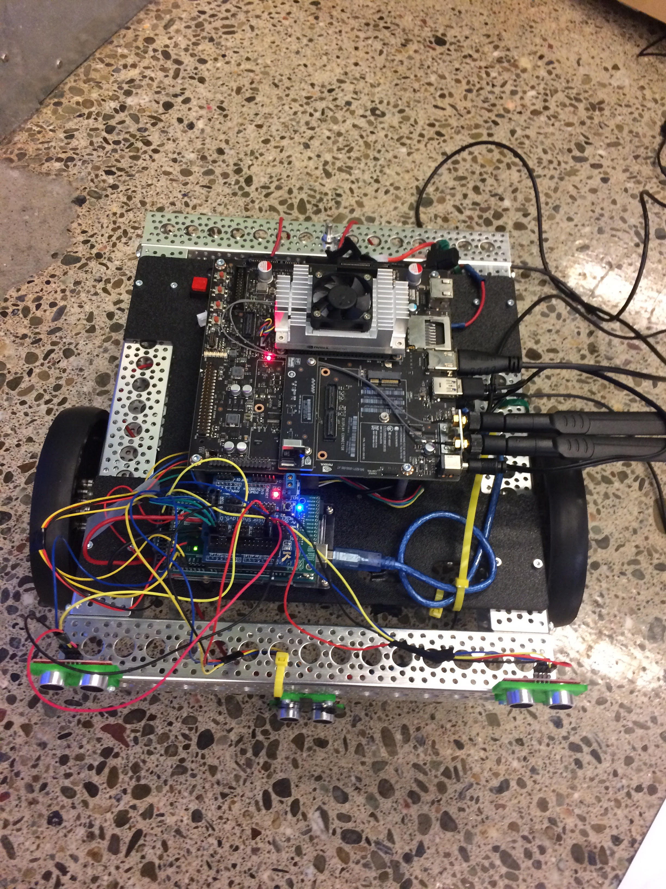
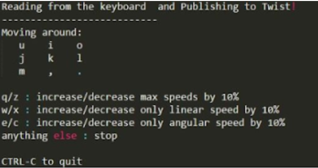
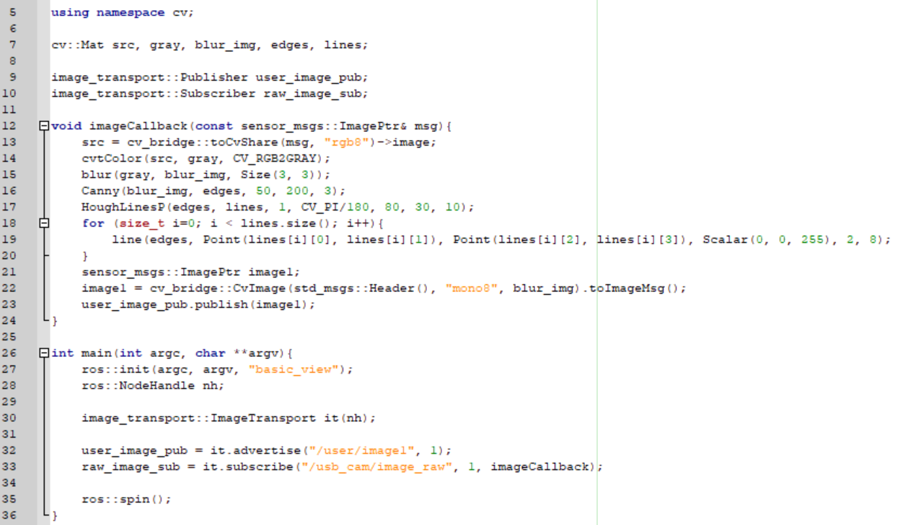

Over the summer of 2018, I worked as a robotics instructor for a summer camp at Stanford University in California. I taught a course titled "Self-Driving and Autonomous Robotics Lab". I first assembled the frame for the robot, then wired it. The self-driving robot was built upon NVIDIA's Jetson TX1 chip. I used ROS on the Ubuntu OS to communicate with the chip. The directions for the robot were written in C++.
Frame Assembly

Assembled car built from Jetson TX1 chip.
Lab #1: Controlling the Jetson with Keyboard
In this lab, you will make the Jetson move simply by pressing keys on your keyboard!
ssh into the Jetson
Change directories to the catkin workspace
Source bashrc and devel/setup:
source ~/.bashrc
Source devel/setup.sh
Launch jet bring-up:
Now launch the keyboard control program:
rosrun teleop_twist_keyboard
teleop_twist_keyboard.py
Now you can control the Jetsron with your keyboard! Your terminal should look like the following:

Controlling the Jetson remotely with a keyboard.
Lab #2: Edge Detection
The following is the code (C++) which allows the Jetson to detect edges and turn away from them with its sonar sensors.
